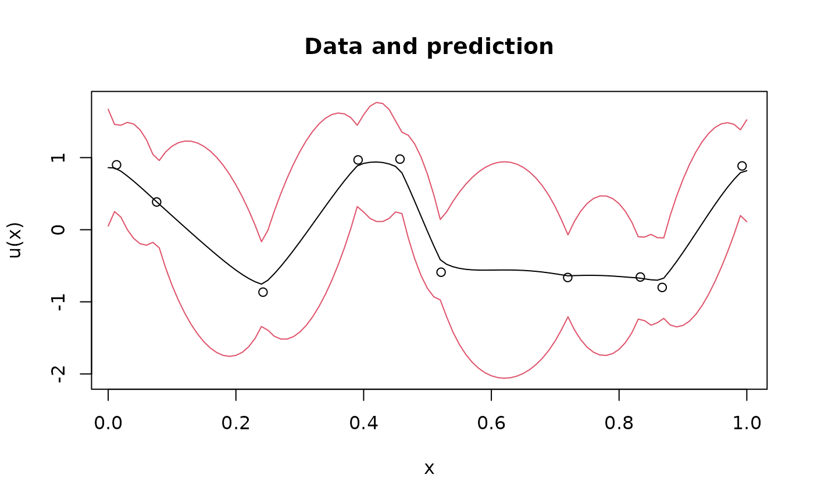

Prediction of a fractional SPDE using a rational SPDE approximation
Source:R/fractional.computations.R
predict.rSPDEobj.RdThe function is used for computing kriging predictions based on data \(Y_i = u(s_i) + \epsilon_i\), where \(\epsilon\) is mean-zero Gaussian measurement noise and \(u(s)\) is defined by a fractional SPDE \(L^\beta u(s) = W\), where \(W\) is Gaussian white noise.
Usage
# S3 method for rSPDEobj
predict(object, A, Aprd, Y, sigma.e, compute.variances = FALSE, ...)Arguments
- object
The rational SPDE approximation, computed using
fractional.operators(),matern.operators(), orspde.matern.operators().- A
A matrix linking the measurement locations to the basis of the FEM approximation of the latent model.
- Aprd
A matrix linking the prediction locations to the basis of the FEM approximation of the latent model.
- Y
A vector with the observed data, can also be a matrix where the columns are observations of independent replicates of \(u\).
- sigma.e
The standard deviation of the Gaussian measurement noise. Put to zero if the model does not have measurement noise.
- compute.variances
Set to also TRUE to compute the kriging variances.
- ...
further arguments passed to or from other methods.
Value
A list with elements
- mean
The kriging predictor (the posterior mean of u|Y).
- variance
The posterior variances (if computed).
Examples
# Sample a Gaussian Matern process on R using a rational approximation
kappa <- 10
sigma <- 1
nu <- 0.8
sigma.e <- 0.3
# create mass and stiffness matrices for a FEM discretization
x <- seq(from = 0, to = 1, length.out = 101)
fem <- rSPDE.fem1d(x)
# compute rational approximation
op <- matern.operators(
kappa = kappa, sigma = sigma,
nu = nu, G = fem$G, C = fem$C, d = 1
)
# Sample the model
u <- simulate(op)
# Create some data
obs.loc <- runif(n = 10, min = 0, max = 1)
A <- rSPDE.A1d(x, obs.loc)
Y <- as.vector(A %*% u + sigma.e * rnorm(10))
# compute kriging predictions at the FEM grid
A.krig <- rSPDE.A1d(x, x)
u.krig <- predict(op,
A = A, Aprd = A.krig, Y = Y, sigma.e = sigma.e,
compute.variances = TRUE
)
plot(obs.loc, Y,
ylab = "u(x)", xlab = "x", main = "Data and prediction",
ylim = c(
min(u.krig$mean - 2 * sqrt(u.krig$variance)),
max(u.krig$mean + 2 * sqrt(u.krig$variance))
)
)
lines(x, u.krig$mean)
lines(x, u.krig$mean + 2 * sqrt(u.krig$variance), col = 2)
lines(x, u.krig$mean - 2 * sqrt(u.krig$variance), col = 2)
